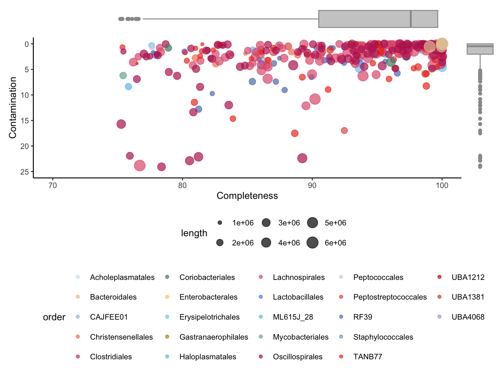
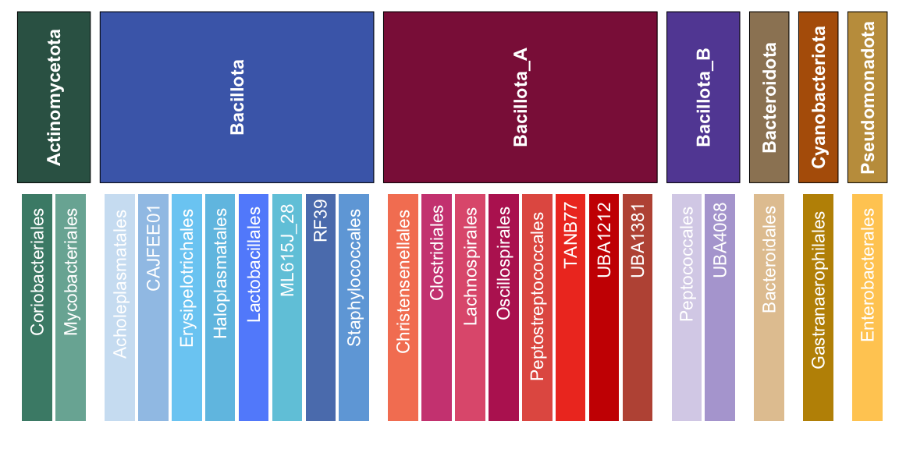
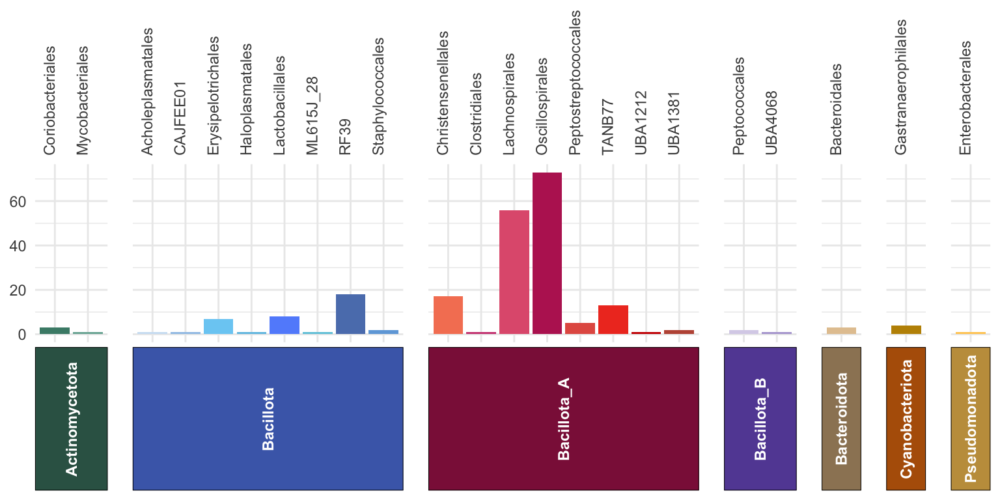
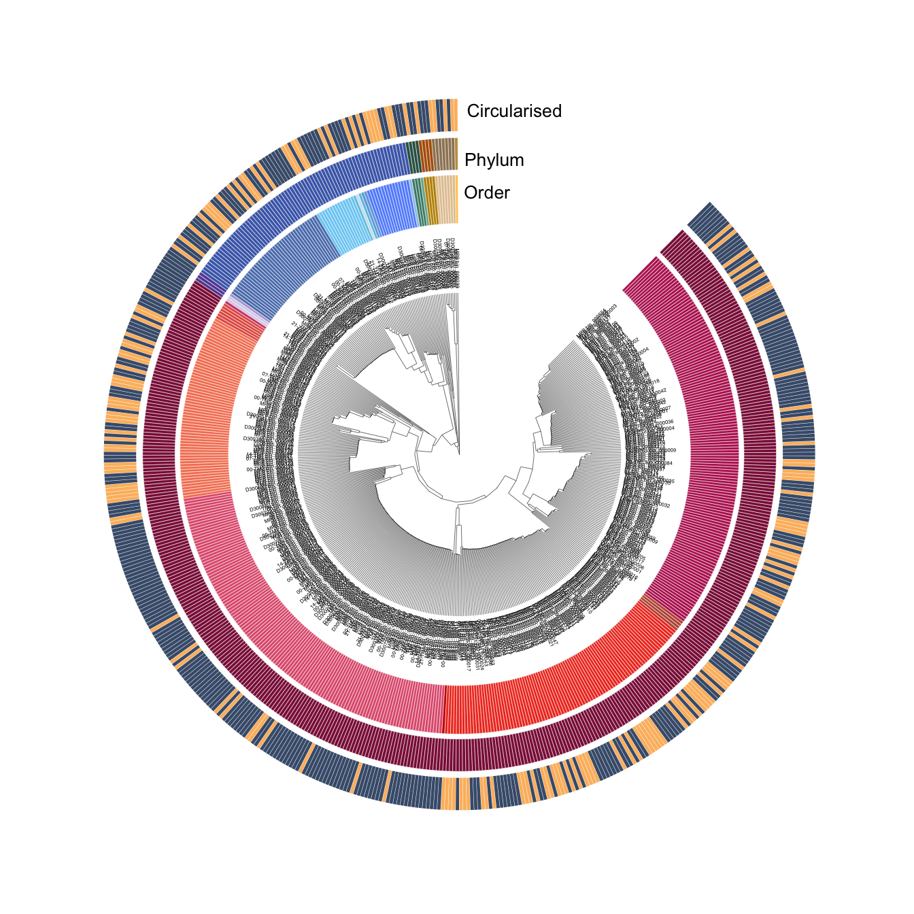
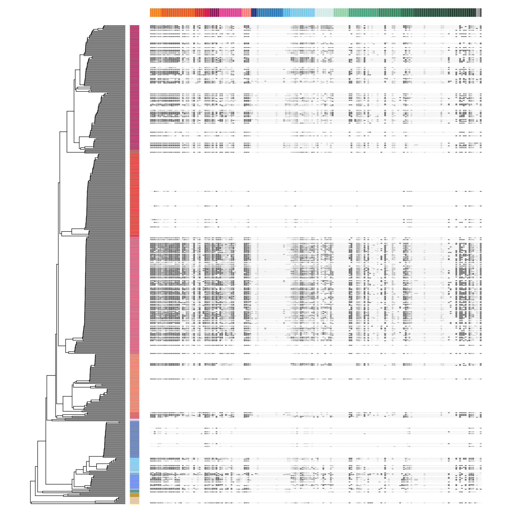
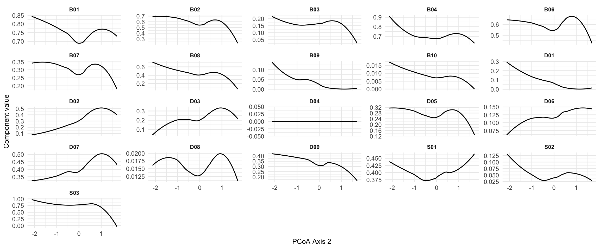
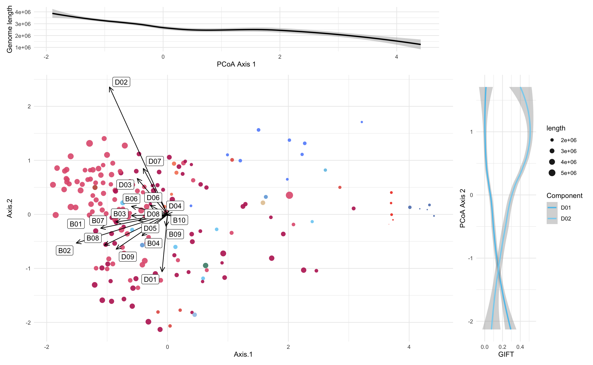
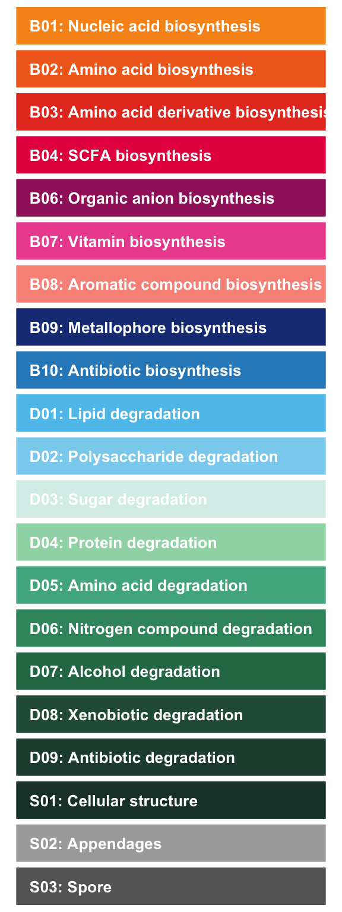

10 MAG catalogue
print_median_iqr <- function(x, name) {
med <- round(median(x), 2)
iqr_vals <- round(quantile(x, probs = c(0.25, 0.75)), 2)
cat(name, "median =", med, "IQR =", iqr_vals[1], "-", iqr_vals[2], "\n")
}10.1 Genome quality
Completeness: median = 97.9 IQR = 90.73 - 100 Contamination: median = 0.46 IQR = 0 - 2.03 genome_metadata %>%
summarise(
circular_count = sum(circularity == "1"),
total_count = n(),
circular_percent = 100 * circular_count / total_count
)# A tibble: 1 × 3
circular_count total_count circular_percent
<int> <int> <dbl>
1 162 526 30.8order_metadata %>%
summarise(
genera_count = sum(number_of_genera),
lachnospirales_count = sum(number_of_genera[order == "Lachnospirales"]),
lachnospirales_perc = 100 * lachnospirales_count / genera_count,
οscillospirales_count = sum(number_of_genera[order == "Oscillospirales"]),
οscillospirales_perc = 100 * οscillospirales_count / genera_count
)# A tibble: 1 × 5
genera_count lachnospirales_count lachnospirales_perc οscillospirales_count οscillospirales_perc
<int> <int> <dbl> <int> <dbl>
1 222 56 25.2 73 32.9#Generate quality biplot
genome_biplot <- genome_metadata %>%
select(c(genome,domain,order,completeness,contamination,length)) %>%
arrange(match(genome, rev(genome_tree$tip.label))) %>% #sort MAGs according to phylogenetic tree
ggplot(aes(x=completeness,y=contamination,size=length,color=order)) +
geom_point(alpha=0.7) +
xlim(c(70,100)) +
ylim(c(25,0)) +
scale_color_manual(values=order_colors) +
labs(y= "Contamination", x = "Completeness") +
theme_classic() +
theme(legend.position = "none")
#Generate contamination boxplot
genome_contamination <- genome_metadata %>%
ggplot(aes(y=contamination)) +
ylim(c(25,0)) +
geom_boxplot(colour = "#999999", fill="#cccccc") +
theme_void() +
theme(legend.position = "none",
axis.title.x = element_blank(),
axis.title.y = element_blank(),
axis.text.y=element_blank(),
axis.ticks.y=element_blank(),
axis.text.x=element_blank(),
axis.ticks.x=element_blank(),
plot.margin = unit(c(0, 0, 0.40, 0),"inches")) #add bottom-margin (top, right, bottom, left)
#Generate completeness boxplot
genome_completeness <- genome_metadata %>%
ggplot(aes(x=completeness)) +
xlim(c(70,100)) +
geom_boxplot(colour = "#999999", fill="#cccccc") +
theme_void() +
theme(legend.position = "none",
axis.title.x = element_blank(),
axis.title.y = element_blank(),
axis.text.y=element_blank(),
axis.ticks.y=element_blank(),
axis.text.x=element_blank(),
axis.ticks.x=element_blank(),
plot.margin = unit(c(0, 0, 0, 0.50),"inches")) #add left-margin (top, right, bottom, left)
# Align margins
genome_biplot <- genome_biplot + theme(plot.margin = margin(5, 5, 5, 5))
genome_completeness <- genome_completeness + theme(plot.margin = margin(0, 5, 0, 5))
genome_contamination <- genome_contamination + theme(plot.margin = margin(5, 0, 5, 0))
# Compose layout
top_row <- genome_completeness + plot_spacer() + plot_layout(widths = c(15, 1))
bottom_row <- genome_biplot + genome_contamination + plot_layout(widths = c(15, 1))
# Stack rows
MAG_plot <- (top_row / bottom_row + plot_layout(heights = c(2, 15))) + plot_layout(guides = "collect") &
theme(legend.position = "bottom", legend.box = "vertical")
MAG_plot
10.2 MAG catalogue phyla and order colours
MAG_tax_df <- order_metadata %>%
select(order, phylum) %>%
distinct() # ensure no duplicates
# get the phylum order that facet_grid2 will use (alphabetical by default)
phylum_order <- MAG_tax_df %>%
distinct(phylum) %>%
arrange(phylum) %>%
pull(phylum)
# phylum strip colors in correct order
strip_colors <- phylum_colors[phylum_order]
# plot: use y = 1 directly
ggplot(MAG_tax_df, aes(x = order, y = 1, fill = order)) +
geom_col(width = 0.9, show.legend = FALSE) +
geom_text(aes(label = order),
angle = 90, color = "white", size = 3,
hjust = 1.1, vjust = 0.5) +
scale_fill_manual(values = order_colors) +
facet_grid2(
. ~ phylum,
scales = "free_x",
space = "free",
strip = strip_themed(
background_x = elem_list_rect(fill = strip_colors),
text_x = elem_list_text(angle = 90, color = "white", face = "bold")
)
) +
theme_minimal(base_size = 11) +
theme(
axis.text = element_blank(),
axis.ticks = element_blank(),
axis.title = element_blank(),
panel.grid = element_blank(),
panel.spacing = unit(0.3, "lines")
)
10.3 MAG catalogue phyla and order colours, and genera number
MAG_tax_df <- order_metadata %>%
select(phylum, order, number_of_genera) %>%
distinct() %>%
mutate(
order_color = order_colors[order],
phylum_color = phylum_colors[phylum]
)
# 2. Get facet strip colors in correct order
phylum_order <- MAG_tax_df %>%
distinct(phylum) %>%
arrange(phylum) %>%
pull(phylum)
strip_colors <- unname(phylum_colors[phylum_order])
# 3. Plot
ggplot(MAG_tax_df, aes(x = order, y = number_of_genera, fill = order)) +
# Bars
geom_col(width = 0.9, show.legend = FALSE) +
# Color scale
scale_fill_manual(values = order_colors) +
# Facet by phylum (strip on bottom)
facet_grid2(
. ~ phylum,
scales = "free_x",
space = "free_x",
switch = "x",
strip = strip_themed(
background_x = elem_list_rect(fill = strip_colors),
text_x = elem_list_text(angle = 90, color = "white", face = "bold")
)
) +
# Flip x-axis title and text to top
scale_x_discrete(position = "top") +
# Theme
theme_minimal(base_size = 11) +
theme(
axis.text.x = element_text(angle = 90, vjust = 0.5, hjust = 0),
axis.title = element_blank(),
panel.spacing = unit(1, "lines"),
strip.background = element_blank(),
strip.placement = "outside"
)
10.4 Genome phylogeny plot
# Generate the phylum color heatmap
phylum_heatmap <- genome_metadata %>%
arrange(match(genome, genome_tree$tip.label)) %>%
select(genome,phylum) %>%
mutate(phylum = factor(phylum, levels = unique(phylum))) %>%
column_to_rownames(var = "genome")
# Generate the order color heatmap
order_heatmap <- genome_metadata %>%
arrange(match(genome, genome_tree$tip.label)) %>%
select(genome, order) %>%
mutate(order = factor(order, levels = unique(order))) %>%
column_to_rownames(var = "genome")
# Generate the basal tree
circular_tree <- force.ultrametric(genome_tree, method="extend") %>% # extend to ultrametric for the sake of visualisation
ggtree(., layout="fan", open.angle=10, size=0.1)***************************************************************
* Note: *
* force.ultrametric does not include a formal method to *
* ultrametricize a tree & should only be used to coerce *
* a phylogeny that fails is.ultrametric due to rounding -- *
* not as a substitute for formal rate-smoothing methods. *
***************************************************************# Add the phylum ring
circular_tree <- gheatmap(circular_tree,
phylum_heatmap,
offset = 1.3, width = 0.2, colnames = FALSE) +
scale_fill_manual(values = phylum_colors, name = "Phylum") +
geom_tiplab2(size = 1, hjust = -0.1) +
theme(plot.margin = margin(0, 0, 0, 0),
panel.margin = margin(0, 0, 0, 0))
# Flush color scale for the next ring
circular_tree <- circular_tree + new_scale_fill()
# Add order ring
circular_tree <- gheatmap(circular_tree,
order_heatmap,
offset = 0.55, width = 0.3, colnames = FALSE) +
scale_fill_manual(values = order_colors, name = "Order") +
theme(legend.position = "right")
# Flush color scale to enable a new color scheme in the next ring
circular_tree <- circular_tree + new_scale_fill()
circular_tree <- circular_tree +
new_scale_fill() +
scale_fill_manual(values = c("1" = "#fcbb6d", "0" = "#465c7a"),
name = 'Circularized genomes') +
geom_fruit(
data = genome_metadata,
geom = geom_bar,
# Use as.factor to map circularity
mapping = aes(x = 1, y = genome, fill = circularity),
offset = 1.0,
orientation = "y",
stat = "identity")
# Add text
circular_tree <- circular_tree +
annotate('text', x=3.2, y=0, label=' Order', size=3.5) +
annotate('text', x=3.6, y=0, label=' Phylum', size=3.5) +
annotate('text', x=4.2, y=0, label=' Circularised', size=3.5)
#Plot circular tree
p <-circular_tree %>% open_tree(45) %>% rotate_tree(90) +
theme(legend.position = "bottom", legend.box = "vertical")
# print(p)
# ggsave(filename = "results/figures/MAG_macro_tree.pdf", plot = p,
# units = "cm", width = 29, height = 40)10.5 Genome phylogeny plot without legend

#Aggregate bundle-level GIFTs into the compound level
GIFTs_elements <- to.elements(genome_gifts,GIFT_db)
#Aggregate element-level GIFTs into the function level
GIFTs_functions <- to.functions(GIFTs_elements,GIFT_db)
#Aggregate function-level GIFTs into overall Biosynthesis, Degradation and Structural GIFTs
GIFTs_domains <- to.domains(GIFTs_functions,GIFT_db)10.6 Functional overview
function_group_colors <- c(
B01 = "#f7941d", # topmost color (orange)
B02 = "#f26c1f", # apricot-orange
B03 = "#e63e26", # red-orange
B04 = "#e6004c", # deep pink
B06 = "#a1246b", # magenta
B07 = "#ed559f", # pink
B08 = "#f99388", # peach
B09 = "#1a3c85", # dark blue
B10 = "#2b8ac4", # blue
D01 = "#5ec4ed", # sky blue
D02 = "#89d2ef", # pale blue
D03 = "#d9efe9", # pale mint
D04 = "#9ed7b4", # light green
D05 = "#4fb18f", # mint green
D06 = "#3b946d", # dark teal
D07 = "#2a7854", # deeper teal
D08 = "#295b47", # forest green
D09 = "#234c3f", # deep green
S01 = "#1b3e34", # nearly black-green
S02 = "#aaaaaa", # light grey
S03 = "#666666" # dark grey
)order_heatmap <- genome_metadata %>%
arrange(match(genome, genome_tree$tip.label)) %>%
select(genome,order) %>%
column_to_rownames(var = "genome")
# Aggregate basal GIFT into elements
function_table <- genome_gifts %>%
to.elements(., GIFT_db)
# 1. Base tree
function_tree <- force.ultrametric(genome_tree, method="extend") %>%
ggtree(size = 0.3) ***************************************************************
* Note: *
* force.ultrametric does not include a formal method to *
* ultrametricize a tree & should only be used to coerce *
* a phylogeny that fails is.ultrametric due to rounding -- *
* not as a substitute for formal rate-smoothing methods. *
***************************************************************# 2. First heatmap: add order (row) color strip
function_tree <- gheatmap(
function_tree,
order_heatmap,
offset = 0, width = 0.1, colnames = FALSE
) +
scale_fill_manual(values = order_colors) +
labs(fill = "Order")
# 5. Reset fill scale again for main function matrix
function_tree <- function_tree + new_scale_fill()
# 6. Add the full function table heatmap (numeric)
function_tree <- gheatmap(
function_tree,
function_table,
offset = 0.5,
width = 3.5,
colnames = FALSE
) +
vexpand(0) + # vexpand(0.08) +
coord_cartesian(clip = "off") +
scale_fill_gradient(low = "#f4f4f4", high = "#666666", na.value = "white") +
labs(fill = "GIFT")
# 7. Final plot
function_tree <- function_tree +
theme_void() +
theme(legend.position = "none")
# function_tree# Join to get Code_function (e.g. B01, D01) for each Code_element (e.g. B0101, B0204)
column_annotation <- tibble(Code_element = colnames(function_table)) %>%
left_join(
GIFT_db %>%
select(Code_element, Code_function) %>%
distinct(Code_element, .keep_all = TRUE),
by = "Code_element"
)
# Create a 1-row matrix with Code_function values
column_annotation_matrix <- matrix(
column_annotation$Code_function,
nrow = 1,
dimnames = list("Function_group", column_annotation$Code_element)
)
# Ensure Code_element order matches your heatmap
column_annotation_df <- column_annotation %>%
distinct(Code_element, Code_function)
column_annotation_df$Code_element <- factor(
column_annotation_df$Code_element,
levels = column_annotation$Code_element
)
# Plot annotation strip
annotation_strip <- ggplot(column_annotation_df, aes(x = Code_element, y = 1, fill = Code_function)) +
geom_tile(color = "white", linewidth = 0.1) +
scale_fill_manual(values = function_group_colors, na.translate = FALSE) +
theme_void() +
theme(
axis.text.x = element_blank(),
plot.margin = margin(0, 0, 0, 0)
) +
guides(fill = "none") +
theme_void()
# annotation_stripcombined_plot <- ((plot_spacer() | wrap_elements(annotation_strip) | plot_spacer()) + plot_layout(widths = c(10.1, 25, 1.1))) /
wrap_elements(function_tree) +
plot_layout(heights = c(0.2, 10)) # adjust strip height as needed
combined_plot
10.8 Functional ordination
PCoA functional ordination with PCA loadings.
gift_pcoa <- genome_gifts %>%
to.elements(., GIFT_db) %>%
as.data.frame() %>%
vegdist(method="euclidean") %>%
pcoa()
gift_pcoa_rel_eigen <- gift_pcoa$values$Relative_eig[1:10]
# Get genome positions
gift_pcoa_vectors <- gift_pcoa$vectors %>% #extract vectors
as.data.frame() %>%
select(Axis.1,Axis.2) # keep the first 2 axes
gift_pcoa_eigenvalues <- gift_pcoa$values$Eigenvalues[c(1,2)]
gift_pcoa_gifts <- cov(genome_gifts, scale(gift_pcoa_vectors)) %*% diag((gift_pcoa_eigenvalues/(nrow(genome_gifts)-1))^(-0.5)) %>%
as.data.frame() %>%
rename(Axis.1=1,Axis.2=2) %>%
rownames_to_column(var="label") %>%
#get function summary vectors
mutate(func=substr(label,1,3)) %>%
group_by(func) %>%
summarise(Axis.1=mean(Axis.1),
Axis.2=mean(Axis.2)) %>%
rename(label=func) %>%
filter(!label %in% c("S01","S02","S03"))scale <- 15 # scale for vector loadings
pcoa_plot <- gift_pcoa_vectors %>%
rownames_to_column(var="genome") %>%
left_join(genome_metadata, by="genome") %>%
ggplot() +
#genome positions
scale_color_manual(values=order_colors)+
geom_point(aes(x=Axis.1,y=Axis.2, color=order, size=length),
alpha=0.9, shape=16) +
guides(color = "none") +
#scale_color_manual(values=phylum_colors) +
scale_size_continuous(range = c(0.1,5)) +
#loading positions
geom_segment(data=gift_pcoa_gifts,
aes(x=0, y=0, xend=Axis.1 * scale, yend=Axis.2 * scale),
arrow = arrow(length = unit(0.3, "cm"),
type = "open",
angle = 25),
linewidth = 0.5,
color = "black") +
#Primary and secondary scale adjustments
# scale_x_continuous(name = paste0("PCoA1 (",round(gift_pcoa_rel_eigen[1]*100, digits = 2), " %)"),
# sec.axis = sec_axis(~ . / scale)
# ) +
# scale_y_continuous(name = paste0("PCoA2 (",round(gift_pcoa_rel_eigen[2]*100, digits = 2), " %)"),
# sec.axis = sec_axis(~ . / scale)
# ) +
geom_label_repel(data = gift_pcoa_gifts,
aes(label = label, x = Axis.1 * scale, y = Axis.2 * scale),
segment.color = 'transparent') +
theme_minimal()
# pcoa_plotWARNING IS GIVEN FOR THIS:
genome Axis.1 Axis.2 domain phylum class order family genus species completeness contamination coding_density length N50_length circularity
1 MPB:bin_000147 -0.3441338 1.451352
which I cannot find in genome metadata. So I will ignore this warning for now.
gift_axis_1 <- gift_pcoa_vectors %>%
rownames_to_column(var="genome") %>%
left_join(genome_metadata, by="genome") %>%
ggplot(aes(x=Axis.1, y=length)) +
geom_smooth(color = "black") +
theme_minimal() +
theme(legend.position = "none") +
labs(y = "Genome length", x = "PCoA Axis 1")
# gift_axis_1gift_df_PCoA <- genome_gifts %>%
to.elements(., GIFT_db) %>%
to.functions(., GIFT_db) %>%
as.data.frame() %>%
rownames_to_column(var="genome") %>%
left_join(genome_metadata, by="genome") %>%
left_join(gift_pcoa_vectors %>% rownames_to_column(var="genome"), by="genome")
gift_long <- gift_df_PCoA %>%
select(genome, Axis.2,
B01, B02, B03, B04, B06, B07, B08, B09, B10,
D01, D02, D03, D04, D05, D06, D07, D08, D09,
S01, S02, S03) %>%
pivot_longer(
cols = c(B01, B02, B03, B04, B06, B07, B08, B09, B10,
D01, D02, D03, D04, D05, D06, D07, D08, D09,
S01, S02, S03),
names_to = "component",
values_to = "value"
)
# Plot: x = Axis.2, y = value, colored by component (D01 vs D02)
gift_plot_PC2 <- gift_long %>%
filter(component %in% c("D01", "D02")) %>%
ggplot(aes(y = value, x = Axis.2, color = component)) +
geom_smooth() +
scale_color_manual(values = c(D01 = "#5ec4ed", D02 = "#89d2ef")) +
theme_minimal() +
labs(y = "GIFT", x = "PCoA Axis 2", color = "Component") +
theme(legend.position = "right")+
coord_flip()
# gift_plot_PC2gift_long %>%
ggplot(aes(x = Axis.2, y = value)) +
geom_smooth(se = FALSE, color = "black", linewidth = 0.6) +
facet_wrap(~ component, ncol = 5, scales = "free_y") +
theme_minimal() +
labs(x = "PCoA Axis 2", y = "Component value") +
theme(
strip.text = element_text(size = 8, face = "bold"),
panel.spacing = unit(0.5, "lines"),
axis.title = element_text(size = 10)
)
Trying to make two axes but the coord_flip () flips them the wrong way https://www.reddit.com/r/rstats/comments/wh9bzd/how_can_i_add_a_secondary_axis_to_ggplot_that/
# # Step 1. Compute ranges of each component
# ranges <- gift_long %>%
# filter(component %in% c("D01", "D02")) %>%
# group_by(component) %>%
# summarise(min_val = min(value, na.rm = TRUE),
# max_val = max(value, na.rm = TRUE))
#
# ranges
#
# gift_plot_PC2 <- gift_long %>%
# filter(component %in% c("D01", "D02")) %>%
# ggplot(aes(x = Axis.2)) +
#
# # Plot D01 as is
# geom_smooth(
# data = subset(gift_long, component == "D01"),
# aes(y = value, color = "Lipid degradation"),
# linewidth = 1
# ) +
#
# # Plot D02 rescaled to fit D01 range
# geom_smooth(
# data = subset(gift_long, component == "D02"),
# aes(y = value / 1.5, color = "Polysaccharide degradation"), # scale to align
# linewidth = 1
# ) +
#
# scale_color_manual(values = c(
# "Lipid degradation" = "#5ec4ed",
# "Polysaccharide degradation" = "#89d2ef"
# )) +
#
# # Add secondary axis showing original D02 scale (rescaled)
# scale_y_continuous(
# name = "Lipid degradation",
# sec.axis = sec_axis(~ . * 1.5, name = "Polysaccharide degradation")
# ) +
#
# theme_minimal() +
# coord_flip() +
# theme(
# legend.position = "none",
# axis.title.x.top = element_text(color = "#5ec4ed", face = "bold"),
# axis.title.x.bottom = element_text(color = "#89d2ef", face = "bold")
# )
#
#
# gift_plot_PC2((gift_axis_1| plot_spacer()) + plot_layout(widths = c(4.5, 1))) /
((pcoa_plot | gift_plot_PC2) + plot_layout(widths = c(7, 1))) +
plot_layout(heights = c(1, 6), guides = "collect") +
theme(legend.position = "bottom") 
GIFT_db_functions <- GIFT_db %>%
select(Code_function, Function, Domain) %>%
distinct(Code_function, .keep_all = TRUE)
GIFT_db_functions Code_function Function Domain
1 B01 Nucleic acid biosynthesis Biosynthesis
2 B02 Amino acid biosynthesis Biosynthesis
3 B03 Amino acid derivative biosynthesis Biosynthesis
4 B04 SCFA biosynthesis Biosynthesis
5 B06 Organic anion biosynthesis Biosynthesis
6 B07 Vitamin biosynthesis Biosynthesis
7 B08 Aromatic compound biosynthesis Biosynthesis
8 B09 Metallophore biosynthesis Biosynthesis
9 B10 Antibiotic biosynthesis Biosynthesis
10 D01 Lipid degradation Degradation
11 D02 Polysaccharide degradation Degradation
12 D03 Sugar degradation Degradation
13 D04 Protein degradation Degradation
14 D05 Amino acid degradation Degradation
15 D06 Nitrogen compound degradation Degradation
16 D07 Alcohol degradation Degradation
17 D08 Xenobiotic degradation Degradation
18 D09 Antibiotic degradation Degradation
19 S01 Cellular structure Structure
20 S02 Appendages Structure
21 S03 Spore StructureGIFT_legend_df <- GIFT_db_functions %>%
mutate(color = function_group_colors[Code_function]) %>%
arrange(Code_function) # keep the order consistent
function_colors <- ggplot(GIFT_legend_df, aes(y = reorder(Code_function, desc(Code_function)), x = 1, fill = Code_function)) +
geom_tile(color = "white", linewidth = 0.4, width = 1.1, height = 0.9) +
scale_fill_manual(values = function_group_colors, guide = "none") +
geom_text(aes(label = paste0(Code_function, ": ", Function)),
hjust = 0, nudge_x = - 0.5, color = "white", size = 3.5, fontface = "bold") +
theme_void() +
theme(
aspect.ratio = NULL,
plot.margin = margin(0, 0, 0, 0)
)
function_colors